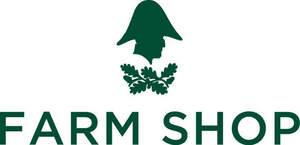

Trade Mark Journal No.2025/029 18 July 2025
UK00004213305 3 June 2025 (3,4,18,20,21,25,29,30,31,32,33,35,39,40,41,43)
Mark 1

Mark 2
- Class 3
- Reed diffusers; scented room sprays; essential oils; cosmetics; toiletries; soaps.
- Class 4
- Candles; scented candles.
- Class 18
- Bags; purses; wallets; luggage; toiletry bags; make-up bags; umbrellas; animal apparel.
- Class 20
- Displays, stands and signage, non-metallic; furniture and furnishings; garden furniture.
- Class 21
- Household utensils; kitchen utensils; cooking utensils, non-electric; tableware, cookware and containers.
- Class 25
- Clothing; footwear; headgear; aprons; slippers.
- Class 29
- Meat, fish, poultry and game; meat extracts; meat products; preserved, frozen, dried and cooked fruits and vegetables; jellies; jams; compotes, fruit and vegetable spreads; eggs; milk and milk products; edible oils and fats; olive oil; cheese; cream; butter; yogurt; sausages; burgers; scotch eggs; prepared meals; soups and stock; snacks; desserts; crisps; prepared nuts.
- Class 30
- Coffee, tea, cocoa and artificial coffee; tea beverages; tea-based beverages; tisanes made of tea (non-medicated -); herbal teas; herbal infusions; fruit infusions; rice; tapioca and sago; flour and preparations made from cereals; cereals; porridge; bread, pastry and confectionery; edible ices; sugar; honey; treacle; yeast; baking-powder; salt; pepper; spices; dried herbs; culinary herbs; mustard; vinegar; sauces (condiments); ice; ice cream; frozen yogurt; bakery goods; quiches; tarts; pastries; cakes; biscuits (cookies); pies; meat pies; fruit pies; sausage rolls; pasta; chutneys.
- Class 31
- Grains and agricultural, horticultural and forestry products not included in other classes; fresh fruits and vegetables; fresh herbs; seeds; natural plants and flowers.
- Class 32
- Non-alcoholic beverages; mineral and aerated waters; fruit-based beverages; fruit-flavoured beverages; juices; juice drinks; smoothies; beer.
- Class 33
- Alcoholic beverages [except beers]; wine; sparkling wines; wine-based beverages; spirits; gin; whisky; brandy; vodka; rum.
- Class 35
- Retail and online retail services relating to food and drink; retail and online retail services relating to delicatessen products; retail and online retail services relating to meat, fish, poultry, game, meat extracts, and meat products; retail and online retail services relating to preserved, frozen, dried and cooked fruits and vegetables; retail and online retail services relating to jellies, jams, compotes, fruit and vegetable spreads, chutneys, eggs, milk, milk products, edible oils and fats, olive oil, cheese, cream, butter, yogurt, sausages, burgers, scotch eggs, prepared meals, soups, stock, snacks, desserts, crisps and prepared nuts; retail and online retail services relating to coffee, tea, cocoa, artificial coffee, tea beverages, tea-based beverages (non-medicated -), tisanes made of tea (non-medicated -), herbal teas, herbal infusions, fruit infusions, rice, tapioca, sago, flour, preparations made from cereals, cereals, porridge, bread, pastry, confectionery, edible ices, sugar, honey, treacle, yeast, baking-powder, salt, pepper, spices, dried herbs, culinary herbs, mustard, vinegar, sauces (condiments), ice, ice cream, frozen yogurt, bakery goods, quiches, tarts, pastries, cakes, biscuits (cookies), pies, meat pies, fruit pies, sausage rolls and pasta; retail and online retail services relating to grains and agricultural, horticultural and forestry products; retail and online retail services relating to fresh fruits and vegetables, fresh herbs, seeds, natural plants and flowers; retail and online retail services relating to non-alcoholic beverages, mineral and aerated waters, fruit-based beverages, fruit-flavoured beverages, juices, juice drinks, smoothies and beer; retail and online retail services relating to alcoholic beverages, wine, sparkling wines, wine-based beverages, spirits, gin, whisky, brandy, vodka and rum; retail and online retail services relating to homeware, reed diffusers, scented room sprays, essential oils, cosmetics, toiletries, soaps, candles and scented candles; retail and online retail services relating to bags, purses, wallets, luggage, toiletry bags, make-up bags, umbrellas and animal apparel; retail and online retail services relating to rugs, blankets, cushions, furniture, furnishings and garden furniture; retail and online retail services in relation to household utensils, kitchen utensils, cooking utensils, glassware, tableware, cookware and containers; retail and online retail services relating to clothing, footwear, headgear, aprons and slippers; retail and online retail services relating to cutlery, kitchen knives, magazines, newspapers, photographs, cards, gift cards, gift bags, wrapping paper, stationery, keyrings and souvenirs; retail and online retail services relating to pet food; administration of membership schemes; administration of a discount program for enabling participants to obtain discounts on goods and services through use of a discount membership card.
- Class 39
- Provision of parking facilities; providing information relating to vehicle parking services.
- Class 40
- Butchery.
- Class 41
- Provision of recreational activities, events and facilities; arranging, organising and conducting of recreational events; arranging, organising and conducting of entertainment events; arranging, organising and conducting of cultural events; cooking instruction.
- Class 43
- Hospitality services [food and drink]; provision of food and drink; café services; restaurant services; delicatessens [restaurants].
The Trustees of the Wellington Resettled Estate
Representative: Boult Wade Tennant LLP